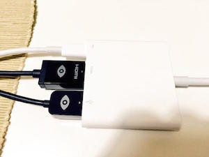

Oculus DK2とMacBookの相性は悪い
概要
記録までに。
MacBookにWin入れていろいろやったけど、ディスプレイアダプタがとっても相性悪くて詰んだ話。
いいもん。MacPro使うもん。いざとなったらゴミ箱もちあるいてやるもん！
環境
in MacBook:
Windows8.1@MacBook early 2015 CTO 1.3Ghz
+ Unity 5.1.0f3
+ Oculus Runtime 0.6.0.0
Oculus <-> MacBook間の接続にはアダプタを使用(というかそれしか手が無い)

Bootcamp版:Unityでのプレイ実行時にエラーで落ちる。やっぱ直に繋がないとダメか、、たぶんアダプタがダメ。
Oculus Utilityでは正常に認識されてるんだけど。惜しいがダメなものはダメ。
VMWareFusion版:ディスプレイは認識されてるけど、USB機器としては認識してないっぽい。
USB機器として認識させられればいけるのでは、、と思うけど、タイムアップ。
in MacPro:
Windows8.1@MacPro 全盛り
+ Unity 5.1.0f3
+ Oculus Runtime 0.6.0.0
Bootcamp版:動いた。うん。速いな。そりゃな。
・Unity入れて、OculusRuntime入れて、動くのかどうか→動いた。
・Bootcamp側なんで、vncでログインできないと辛いな→Wndows8.1Proなら特になにも入れずにできた。
・持ち歩く→笑える
結論
基本、無駄な努力だし特化環境になっちゃってトラブルシュートめんどうそうなので、素直にWindowsマシン買おうな。